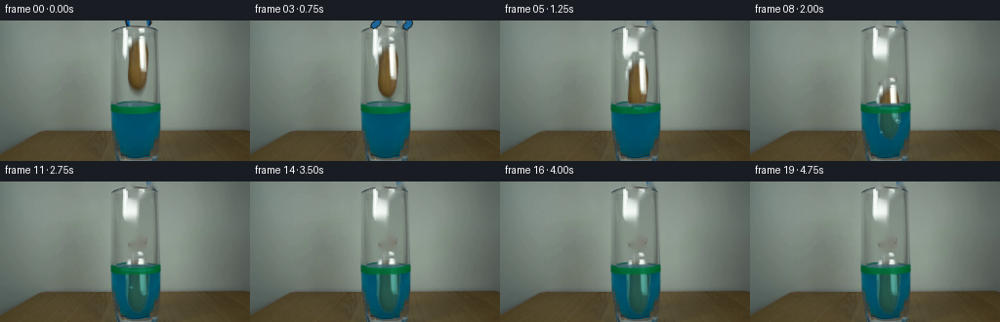
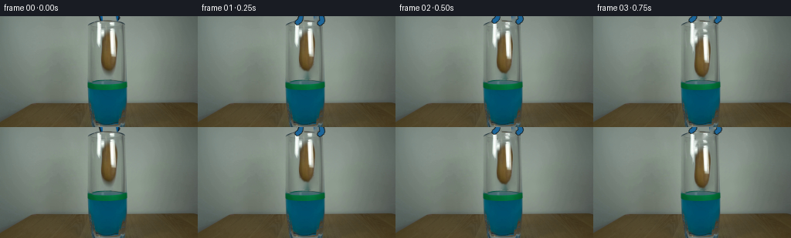
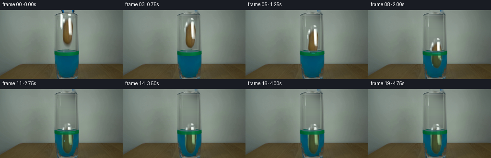
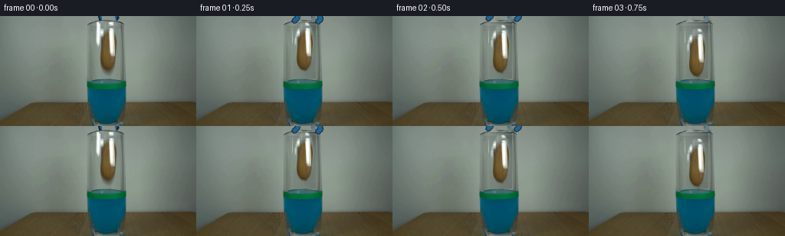
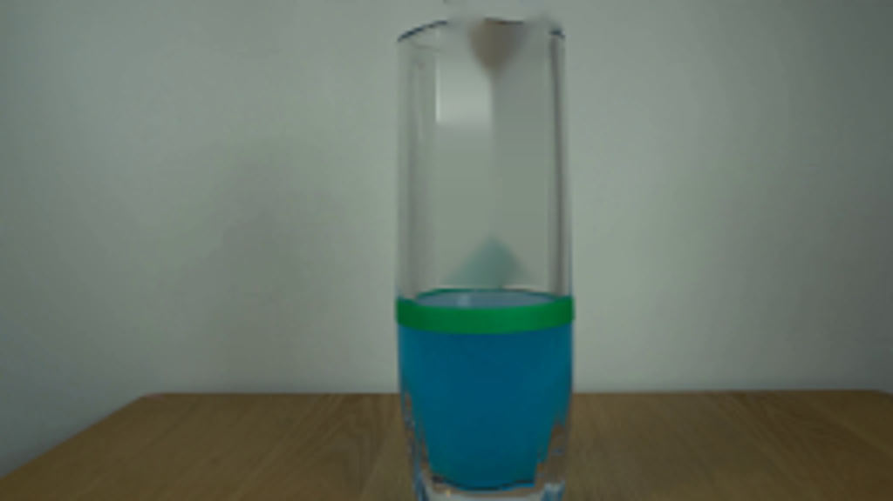

CODING AGENTS AS PIXEL WORLD MODELS
traex/GPT-5.6-Sol · 0143
点击播放 · 原生 RGB 像素
逐轮保存的候选
回放视频、检查图与代码变化。
每份候选均可单独播放。实际图片检查记录在下方工具轨迹中。
候选 01播放与检查图
点击播放 · 原生 RGB 像素


展开代码变化
--- 上一保存版本
+++ 本次保存版本
@@ -0,0 +1,154 @@
+from pathlib import Path
+import numpy as np
+import cv2
+from PIL import Image
+import artifact_io
+
+CASE = Path(__file__).resolve().parent
+src = np.array(Image.open(CASE / 'first_frame.png').convert('RGB'), dtype=np.uint8)
+H, W = src.shape[:2]
+
+# The clean view is reconstructed only where the suspended potato/tool stood.
+# Inpainting from immediately surrounding glass preserves the locked camera and lighting.
+mask = np.zeros((H,W), np.uint8)
+# soft-edged potato silhouette plus its small cast shadow
+pot_poly = np.array([[136,9],[145,9],[150,15],[152,31],[151,52],[148,64],
+ [143,71],[137,70],[132,64],[129,53],[129,31],[132,17]], np.int32)
+cv2.fillPoly(mask, [pot_poly], 255)
+cv2.ellipse(mask, (142,72), (13,9), 0, 0, 360, 255, -1)
+# remove only the protruding blue tool from the top, leaving the glass rim itself
+cv2.rectangle(mask, (128,0), (137,6), 255, -1)
+cv2.rectangle(mask, (151,0), (160,7), 255, -1)
+base = cv2.inpaint(src, mask, 4, cv2.INPAINT_TELEA)
+
+# Reduce occasional inpaint streaks in the central glass, using a smooth vertical glass tone.
+# Keep this very subtle so the original photographic noise remains.
+blur = cv2.GaussianBlur(base, (0,0), 1.4)
+soft = cv2.GaussianBlur((mask>0).astype(np.float32), (0,0), 3.0)[...,None]
+base = np.clip(base*(1-soft*.18) + blur*(soft*.18), 0,255).astype(np.uint8)
+
+# Potato cutout. Polygon alpha includes its native white specular highlight, which is important
+# for retaining the same material and light as the first frame.
+a = np.zeros((H,W), np.uint8)
+cv2.fillPoly(a, [pot_poly], 255)
+a = cv2.GaussianBlur(a, (5,5), 0.85)
+rgba_rgb = src.copy()
+# Crop with room for antialiasing.
+x0,y0,x1,y1 = 126,7,155,74
+obj = rgba_rgb[y0:y1+1,x0:x1+1].copy()
+obj_a = a[y0:y1+1,x0:x1+1].copy()
+
+
+def composite(frame, rgb, alpha, left, top):
+ """Alpha composite a possibly clipped patch into an RGB uint8 frame."""
+ h,w = alpha.shape
+ xx0=max(0,left); yy0=max(0,top); xx1=min(W,left+w); yy1=min(H,top+h)
+ if xx1<=xx0 or yy1<=yy0: return
+ sx0=xx0-left; sy0=yy0-top; sx1=sx0+xx1-xx0; sy1=sy0+yy1-yy0
+ aa=alpha[sy0:sy1,sx0:sx1].astype(np.float32)[...,None]/255.
+ dst=frame[yy0:yy1,xx0:xx1].astype(np.float32)
+ rr=rgb[sy0:sy1,sx0:sx1].astype(np.float32)
+ frame[yy0:yy1,xx0:xx1]=np.clip(dst*(1-aa)+rr*aa,0,255).astype(np.uint8)
+
+
+def draw_tongs(frame, i):
+ # In the first instants the jaws spring apart and withdraw through the cropped top edge.
+ if i > 4: return
+ p = i/4.0
+ rise = int(round(7*p))
+ spread = int(round(6*p))
+ # black rubber/metal outlines, then the same saturated blue seen in frame zero
+ left = np.array([[132-spread,-3-rise],[136-spread,-3-rise],[134-spread,7-rise],[130-spread,10-rise]],np.int32)
+ right= np.array([[153+spread,-3-rise],[157+spread,-3-rise],[159+spread,8-rise],[155+spread,11-rise]],np.int32)
+ cv2.polylines(frame,[left],False,(24,31,31),5,cv2.LINE_AA)
+ cv2.polylines(frame,[right],False,(24,31,31),5,cv2.LINE_AA)
+ cv2.polylines(frame,[left],False,(28,101,153),3,cv2.LINE_AA)
+ cv2.polylines(frame,[right],False,(28,101,153),3,cv2.LINE_AA)
+
+
+def ripple_overlay(frame, i, cx):
+ # Surface disturbance begins when the lower point meets the liquid.
+ if i < 4 or i > 13: return
+ age=i-4
+ amp=max(0.0, 1-age/10.0)
+ layer=frame.copy()
+ rx=int(5+age*2.0)
+ # Back and front arcs have distinct hues, matching the cyan/green surface.
+ cv2.ellipse(layer,(cx,89),(rx,max(1,int(2+age*.18))),0,188,350,
+ (10,63,67),1,cv2.LINE_AA)
+ cv2.ellipse(layer,(cx,89),(max(3,rx-3),max(1,int(1+age*.15))),0,8,172,
+ (19,151,145),1,cv2.LINE_AA)
+ cv2.addWeighted(layer,0.30+0.40*amp,frame,0.70-0.40*amp,0,frame)
+
+# Downward position in pixels; sampled at 4 fps. It accelerates in air then is damped by water.
+fall = [0,0,3,8,15,23,32,41,50,57,61,63,64,64,63,64,64,64,64,64]
+# Minute lateral drift and damped wobble on reaching the bottom.
+drift= [0,0,0,0,0,0,1,1,1,0,-1,-1,0,1,0,0,0,0,0,0]
+frames=[]
+for i in range(20):
+ if i==0:
+ frames.append(src.copy())
+ continue
+ f=base.copy()
+ draw_tongs(f,i)
+ dy=fall[i]; dx=drift[i]
+ left=x0+dx; top=y0+dy
+
+ # Soft shadow through the curved glass, strongest while the object remains in air.
+ shadow_a=cv2.GaussianBlur(obj_a,(0,0),3.2)
+ shadow_a=(shadow_a.astype(np.float32)*(0.15 if dy<20 else 0.09)).astype(np.uint8)
+ shadow_rgb=np.zeros_like(obj)+np.array([45,48,38],np.uint8)
+ composite(f,shadow_rgb,shadow_a,left+3,top+4)
+
+ # Draw the potato as two optical regions: natural color above the surface and
+ # blue-green filtered color below it. The split travels up the potato as it sinks.
+ yy=np.arange(obj.shape[0])[:,None]+top
+ above=(yy < 86).astype(np.uint8)*255
+ below=255-above
+ aa_above=((obj_a.astype(np.uint16)*above.astype(np.uint16))//255).astype(np.uint8)
+ aa_below=((obj_a.astype(np.uint16)*below.astype(np.uint16))//255).astype(np.uint8)
+ composite(f,obj,aa_above,left,top)
+ # Refraction shifts the submerged image a pixel and attenuates warm colors.
+ submerged=obj.astype(np.float32)
+ submerged[...,0]=submerged[...,0]*0.47+1
+ submerged[...,1]=submerged[...,1]*0.66+32
+ submerged[...,2]=submerged[...,2]*0.54+39
+ submerged=np.clip(submerged,0,255).astype(np.uint8)
+ aa_under=(aa_below.astype(np.float32)*0.72).astype(np.uint8)
+ composite(f,submerged,aa_under,left+1,top)
+
+ # The fixed green level marker lies on the near side of the glass and visibly passes
+ # in front of the falling specimen. Preserve it directly from the photograph.
+ # Feather the margins to avoid a pasted rectangular strip.
+ strip=src[84:96,113:166]
+ sa=np.zeros((12,53),np.uint8)
+ sa[1:11,:]=225
+ sa=cv2.GaussianBlur(sa,(3,3),.55)
+ composite(f,strip,sa,113,84)
+
+ ripple_overlay(f,i,141+dx)
+
+ # A few restrained bubbles shed from the potato after entry and rise frame to frame.
+ if 7 <= i <= 13:
+ layer=f.copy()
+ age=i-7
+ bubbles=[(151,106-age*3,2),(134,116-age*2,1)]
+ if i>=9: bubbles.append((147,121-(i-9)*3,1))
+ for bx,by,r in bubbles:
+ if 94 < by < 135:
+ cv2.circle(layer,(bx,by),r,(91,182,191),1,cv2.LINE_AA)
+ if r>1: cv2.circle(layer,(bx-1,by-1),1,(160,214,214),-1,cv2.LINE_AA)
+ cv2.addWeighted(layer,.5,f,.5,0,f)
+
+ # Restore front lower glass glints, reinforcing that everything stays inside the vessel.
+ glint=src[126:142,112:168]
+ ga=np.zeros((16,56),np.uint8)
+ ga[:,0:7]=70; ga[:,49:56]=70; ga[10:16,:]=25
+ ga=cv2.GaussianBlur(ga,(3,3),.7)
+ composite(f,glint,ga,112,126)
+ frames.append(f)
+
+frames=np.stack(frames).astype(np.uint8)
+assert frames.shape==(20,144,256,3)
+assert np.array_equal(frames[0],src)
+artifact_io.save(frames,CASE)
候选 02播放与检查图
点击播放 · 原生 RGB 像素


展开代码变化
--- 上一保存版本
+++ 本次保存版本
@@ -21,6 +21,19 @@
cv2.rectangle(mask, (151,0), (160,7), 255, -1)
base = cv2.inpaint(src, mask, 4, cv2.INPAINT_TELEA)
+# Replace the narrow cleaned interior with a glass-consistent interpolation from its
+# left/right edges. This removes the last potato-colored inpaint residue without touching
+# the vessel outline or changing anything outside the occluded region.
+for y in range(8, 82):
+ xl, xr = 126, 155
+ L = src[y, 123].astype(np.float32)
+ R = src[y, 158].astype(np.float32)
+ for x in range(xl, xr + 1):
+ t=(x-xl)/(xr-xl)
+ # slightly brighten center as expected through the cylindrical glass
+ v=L*(1-t)+R*t + 5.0*np.sin(np.pi*t)
+ base[y,x]=np.clip(v,0,255)
+
# Reduce occasional inpaint streaks in the central glass, using a smooth vertical glass tone.
# Keep this very subtle so the original photographic noise remains.
blur = cv2.GaussianBlur(base, (0,0), 1.4)
@@ -30,6 +43,8 @@
# Potato cutout. Polygon alpha includes its native white specular highlight, which is important
# for retaining the same material and light as the first frame.
a = np.zeros((H,W), np.uint8)
+# Object matte only: the separate ellipse in the cleanup mask is merely its original
+# cast shadow and must not travel with the potato.
cv2.fillPoly(a, [pot_poly], 255)
a = cv2.GaussianBlur(a, (5,5), 0.85)
rgba_rgb = src.copy()
@@ -53,8 +68,8 @@
def draw_tongs(frame, i):
# In the first instants the jaws spring apart and withdraw through the cropped top edge.
- if i > 4: return
- p = i/4.0
+ if i > 2: return
+ p = i/2.0
rise = int(round(7*p))
spread = int(round(6*p))
# black rubber/metal outlines, then the same saturated blue seen in frame zero
@@ -110,11 +125,11 @@
composite(f,obj,aa_above,left,top)
# Refraction shifts the submerged image a pixel and attenuates warm colors.
submerged=obj.astype(np.float32)
- submerged[...,0]=submerged[...,0]*0.47+1
- submerged[...,1]=submerged[...,1]*0.66+32
- submerged[...,2]=submerged[...,2]*0.54+39
+ submerged[...,0]=submerged[...,0]*0.64+2
+ submerged[...,1]=submerged[...,1]*0.71+15
+ submerged[...,2]=submerged[...,2]*0.48+16
submerged=np.clip(submerged,0,255).astype(np.uint8)
- aa_under=(aa_below.astype(np.float32)*0.72).astype(np.uint8)
+ aa_under=(aa_below.astype(np.float32)*0.90).astype(np.uint8)
composite(f,submerged,aa_under,left+1,top)
# The fixed green level marker lies on the near side of the glass and visibly passes
可观测工具轨迹
实际执行的命令与返回图片。
命令 1exit 0
/bin/bash -lc "cat prompt.txt && printf '\\n---RULES---\\n' && cat GENERATION_RULES.md"
命令 2exit 0
/bin/bash -lc "find . -maxdepth 2 -type f -printf '%p\\n' | sort"
命令 3exit 0
/bin/bash -lc "python3 - <<'PY'
from PIL import Image
im=Image.open('first_frame.png')
print(im.mode,im.size)
im.resize((1024,576)).save('.tmp/zoom.png')
PY"命令 4exit 0
/bin/bash -lc 'cat artifact_io.py'
命令 5exit 0
/bin/bash -lc "python3 - <<'PY' import cv2; print(cv2.__version__) PY"
命令 6exit 0
/bin/bash -lc "python3 - <<'PY'
from PIL import Image
import numpy as np, cv2
im=np.array(Image.open('first_frame.png'))
hsv=cv2.cvtColor(im,cv2.COLOR_RGB2HSV)
for y,x in [(30,140),(50,140),(65,140),(10,140),(40,130),(40,150),(90,140),(3,132),(3,154)]: print(y,x,im[y,x],hsv[y,x])
PY"命令 7exit 0
/bin/bash -lc "cat > generate.py <<'PY'
from pathlib import Path
import numpy as np
import cv2
from PIL import Image
import artifact_io
CASE = Path(__file__).resolve().parent
src = np.array(Image.open(CASE / 'first_frame.png').convert('RGB'), dtype=np.uint8)
H, W = src.shape[:2]
# The clean view is reconstructed only where the suspended potato/tool stood.
# Inpainting from immediately surrounding glass preserves the locked camera and lighting.
mask = np.zeros((H,W), np.uint8)
# soft-edged potato silhouette plus its small cast shadow
pot_poly = np.array([[136,9],[145,9],[150,15],[152,31],[151,52],[148,64],
[143,71],[137,70],[132,64],[129,53],[129,31],[132,17]], np.int32)
cv2.fillPoly(mask, [pot_poly], 255)
cv2.ellipse(mask, (142,72), (13,9), 0, 0, 360, 255, -1)
# remove only the protruding blue tool from the top, leaving the glass rim itself
cv2.rectangle(mask, (128,0), (137,6), 255, -1)
cv2.rectangle(mask, (151,0), (160,7), 255, -1)
base = cv2.inpaint(src, mask, 4, cv2.INPAINT_TELEA)
# Reduce occasional inpaint streaks in the central glass, using a smooth vertical glass tone.
# Keep this very subtle so the original photographic noise remains.
blur = cv2.GaussianBlur(base, (0,0), 1.4)
soft = cv2.GaussianBlur((mask>0).astype(np.float32), (0,0), 3.0)[...,None]
base = np.clip(base*(1-soft*.18) + blur*(soft*.18), 0,255).astype(np.uint8)
# Potato cutout. Polygon alpha includes its native white specular highlight, which is important
# for retaining the same material and light as the first frame.
a = np.zeros((H,W), np.uint8)
cv2.fillPoly(a, [pot_poly], 255)
a = cv2.GaussianBlur(a, (5,5), 0.85)
rgba_rgb = src.copy()
# Crop with room for antialiasing.
x0,y0,x1,y1 = 126,7,155,74
obj = rgba_rgb[y0:y1+1,x0:x1+1].copy()
obj_a = a[y0:y1+1,x0:x1+1].copy()
def composite(frame, rgb, alpha, left, top):
\"\"\"Alpha composite a possibly clipped patch into an RGB uint8 frame.\"\"\"
h,w = alpha.shape
xx0=max(0,left); yy0=max(0,top); xx1=min(W,left+w); yy1=min(H,top+h)
if xx1<=xx0 or yy1<=yy0: return
sx0=xx0-left; sy0=yy0-top; sx1=sx0+xx1-xx0; sy1=sy0+yy1-yy0
aa=alpha[sy0:sy1,sx0:sx1].astype(np.float32)[...,None]/255.
dst=frame[yy0:yy1,xx0:xx1].astype(np.float32)
rr=rgb[sy0:sy1,sx0:sx1].astype(np.float32)
frame[yy0:yy1,xx0:xx1]=np.clip(dst*(1-aa)+rr*aa,0,255).astype(np.uint8)
def draw_tongs(frame, i):
# In the first instants the jaws spring apart and withdraw through the cropped top edge.
if i > 4: return
p = i/4.0
rise = int(round(7*p))
spread = int(round(6*p))
# black rubber/metal outlines, then the same saturated blue seen in frame zero
left = np.array([[132-spread,-3-rise],[136-spread,-3-rise],[134-spread,7-rise],[130-spread,10-rise]],np.int32)
right= np.array([[153+spread,-3-rise],[157+spread,-3-rise],[159+spread,8-rise],[155+spread,11-rise]],np.int32)
cv2.polylines(frame,[left],False,(24,31,31),5,cv2.LINE_AA)
cv2.polylines(frame,[right],False,(24,31,31),5,cv2.LINE_AA)
cv2.polylines(frame,[left],False,(28,101,153),3,cv2.LINE_AA)
cv2.polylines(frame,[right],False,(28,101,153),3,cv2.LINE_AA)
def ripple_overlay(frame, i, cx):
# Surface disturbance begins when the lower point meets the liquid.
if i < 4 or i > 13: return
age=i-4
amp=max(0.0, 1-age/10.0)
layer=frame.copy()
rx=int(5+age*2.0)
# Back and front arcs have distinct hues, matching the cyan/green surface.
cv2.ellipse(layer,(cx,89),(rx,max(1,int(2+age*.18))),0,188,350,
(10,63,67),1,cv2.LINE_AA)
cv2.ellipse(layer,(cx,89),(max(3,rx-3),max(1,int(1+age*.15))),0,8,172,
(19,151,145),1,cv2.LINE_AA)
cv2.addWeighted(layer,0.30+0.40*amp,frame,0.70-0.40*amp,0,frame)
# Downward position in pixels; sampled at 4 fps. It accelerates in air then is damped by water.
fall = [0,0,3,8,15,23,32,41,50,57,61,63,64,64,63,64,64,64,64,64]
# Minute lateral drift and damped wobble on reaching the bottom.
drift= [0,0,0,0,0,0,1,1,1,0,-1,-1,0,1,0,0,0,0,0,0]
frames=[]
for i in range(20):
if i==0:
frames.append(src.copy())
continue
f=base.copy()
draw_tongs(f,i)
dy=fall[i]; dx=drift[i]
left=x0+dx; top=y0+dy
# Soft shadow through the curved glass, strongest while the object remains in air.
shadow_a=cv2.GaussianBlur(obj_a,(0,0),3.2)
shadow_a=(shadow_a.astype(np.float32)*(0.15 if dy<20 else 0.09)).astype(np.uint8)
shadow_rgb=np.zeros_like(obj)+np.array([45,48,38],np.uint8)
composite(f,shadow_rgb,shadow_a,left+3,top+4)
# Draw the potato as two optical regions: natural color above the surface and
# blue-green filtered color below it. The split travels up the potato as it sinks.
yy=np.arange(obj.shape[0])[:,None]+top
above=(yy < 86).astype(np.uint8)*255
below=255-above
aa_above=((obj_a.astype(np.uint16)*above.astype(np.uint16))//255).astype(np.uint8)
aa_below=((obj_a.astype(np.uint16)*below.astype(np.uint16))//255).astype(np.uint8)
composite(f,obj,aa_above,left,top)
# Refraction shifts the submerged image a pixel and attenuates warm colors.
submerged=obj.astype(np.float32)
submerged[...,0]=submerged[...,0]*0.47+1
submerged[...,1]=submerged[...,1]*0.66+32
submerged[...,2]=submerged[...,2]*0.54+39
submerged=np.clip(submerged,0,255).astype(np.uint8)
aa_under=(aa_below.astype(np.float32)*0.72).astype(np.uint8)
composite(f,submerged,aa_under,left+1,top)
# The fixed green level marker lies on the near side of the glass and visibly passes
# in front of the falling specimen. Preserve it directly from the photograph.
# Feather the margins to avoid a pasted rectangular strip.
strip=src[84:96,113:166]
sa=np.zeros((12,53),np.uint8)
sa[1:11,:]=225
sa=cv2.GaussianBlur(sa,(3,3),.55)
composite(f,strip,sa,113,84)
ripple_overlay(f,i,141+dx)
# A few restrained bubbles shed from the potato after entry and rise frame to frame.
if 7 <= i <= 13:
layer=f.copy()
age=i-7
bubbles=[(151,106-age*3,2),(134,116-age*2,1)]
if i>=9: bubbles.append((147,121-(i-9)*3,1))
for bx,by,r in bubbles:
if 94 < by < 135:
cv2.circle(layer,(bx,by),r,(91,182,191),1,cv2.LINE_AA)
if r>1: cv2.circle(layer,(bx-1,by-1),1,(160,214,214),-1,cv2.LINE_AA)
cv2.addWeighted(layer,.5,f,.5,0,f)
# Restore front lower glass glints, reinforcing that everything stays inside the vessel.
glint=src[126:142,112:168]
ga=np.zeros((16,56),np.uint8)
ga[:,0:7]=70; ga[:,49:56]=70; ga[10:16,:]=25
ga=cv2.GaussianBlur(ga,(3,3),.7)
composite(f,glint,ga,112,126)
frames.append(f)
frames=np.stack(frames).astype(np.uint8)
assert frames.shape==(20,144,256,3)
assert np.array_equal(frames[0],src)
artifact_io.save(frames,CASE)
PY
python3 generate.py
python3 - <<'PY'
from PIL import Image
import numpy as np
print('identical',np.array_equal(np.array(Image.open('first_frame.png')),np.array(Image.open('frames/00.png'))))
PY"命令 8exit 0
/bin/bash -lc "python3 - <<'PY'
import cv2, numpy as np
from PIL import Image
s=np.array(Image.open('first_frame.png'))
for n,(x0,y0,x1,y1,r,method) in enumerate([(126,7,155,81,5,cv2.INPAINT_TELEA),(124,7,157,81,5,cv2.INPAINT_TELEA),(126,7,155,81,5,cv2.INPAINT_NS),(124,7,157,81,7,cv2.INPAINT_NS)]):
m=np.zeros(s.shape[:2],np.uint8); cv2.rectangle(m,(x0,y0),(x1,y1),255,-1);cv2.rectangle(m,(128,0),(138,8),255,-1);cv2.rectangle(m,(150,0),(161,8),255,-1)
b=cv2.inpaint(s,m,r,method); Image.fromarray(b).resize((1024,576)).save(f'.tmp/in{n}.png')
PY"命令 9exit 0
/bin/bash -lc "python3 - <<'PY'
from PIL import Image
for i in range(4):
Image.open(f'.tmp/in{i}.png').crop((440,0,680,400)).save(f'.tmp/c{i}.png')
PY"命令 10exit 0
/bin/bash -lc 'python3 generate.py && cp inspection.png .tmp/final_inspection.png'
视觉工具实际返回图片 1

视觉工具实际返回图片 2

视觉工具实际返回图片 3

视觉工具实际返回图片 4

视觉工具实际返回图片 5

保存候选 2 份；完成命令 10 次；可验证图片返回 5 张。原始 API 响应与完整日志保留在本地。